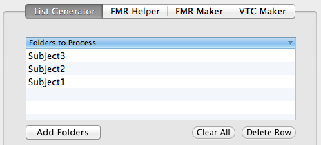
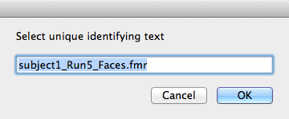
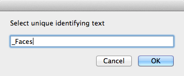
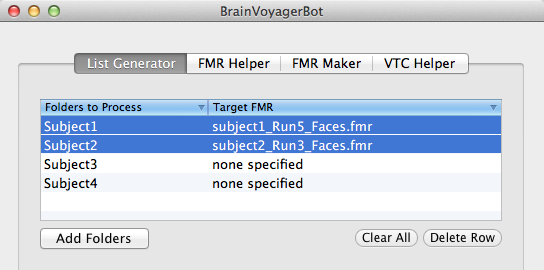
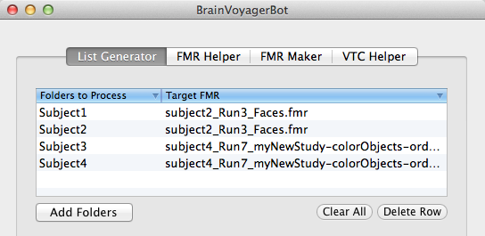
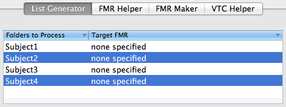
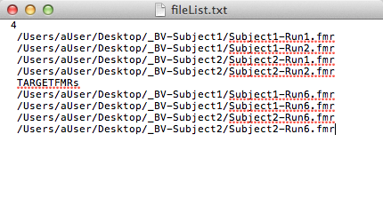

Using the List Generator
Purpose
The list generator is a simple tool that creates a text file with a list of file paths to all FMR files found in the folder(s) that the user selects, as well as the path to all target FMR files (i.e. the target run to be used for motion correction). The text file is intended to be used with BrainVoyager's Batch Processing Wizard for 4d Data. Using a text file in the Batch Processing Wizard instead of selecting files in the Wizard's GUI is extremely desirable because the selection process for FMR file/target file pairs is somewhat cumbersome, especially when preprocessing a large number of files. The list generator automates the creation of a text file formatted properly to be read into the Wizard.
Use
Click Add Folders to select folders containing FMR files that you'd like to preprocess. One or more folders can be selected at the same time, and there is no required directory structure. That is, a user could select two folders, one of which contains .FMR files, and another that contains sub-directories that each contain .FMR files. The application will automatically search through all selected folders and sub-folders for those containing FMR files, and the names of those folders will be displayed in the table as shown below:

You can add or remove folders using the Clear and Delete Row buttons.
Options for Specifying Target .fmr Files
There are two ways to specify which .fmr files should be used as the "target" .fmr files for motion correction:
Set for selected rows: Using this method, target files can be set programatically for each folder selected in the table view. To specify files using this method, select one or more rows, and click "Set..." next to "Set for selected rows:". If only one row is selected, a file selection dialog will open to the selected folder. Choose the file that should be used as the target .fmr, and the path to that file will appear next to the folder in the table view. In the event that many folders will use the same target file (i.e., a target with some common/unique identifying string across subjects, such as the condition - see examples below), select many rows in the table and click "Set...". A file selection dialog will open to the first selected folder. Choose a target file, and a dialog box will pop up with the name of the selected file. You should then enter a unique/identifying search string (or simply delete other parts of the file name). For example, consider an example where you had four subject folders, two from one study, and two from a different study. To set the target file for the first two, select the first to rows as shown below, then click "Set..."

After selecting a target file, the dialog box will come up and you'll see the filename for the target that was selected:

The search string for the target file for these two subjects is _Faces, so enter that into the box and click okay:

At this point, the application will search through the other selected folder for a file whose name contains "_Faces," and set the target file for that folder to the file found. You'll see the result in the table view:

Following the same procedure for the next two rows with a different search string ("colorObjects") will set the target file for the last two folders:

NOTE: discontiguous row selection as shown below is not currently supported:

Set using run number: An alternative to the method described above is to enter a run number in the text field next to "Motion Correct to Run:". BrainVoyagerBot assumes that the same run number should be used as the target file for all FMR files in the selected folders. FMR files MUST include "run" or "Run" somewhere in the file name, for example "MyStudy_Subject1_Run3_Session1.fmr" (where it appears within the file name does not matter, the whole string will be searched).
Select Text File Location & Generate Text File
After specifying target .fmr files using either of the methods decribed above, click Select Location to choose a location and name for the text file that will be generated, then click Generate to create the text file. A notification will appear as shown below when the process is complete, and a Finder window will open to the location of the new text file.
The text file output will resemble the image below. The total number of FMR files to be preprocessed is printed on the first line, then the FMR file paths, and the corresponding target FMR file paths as required by the Batch Processing Wizard.
